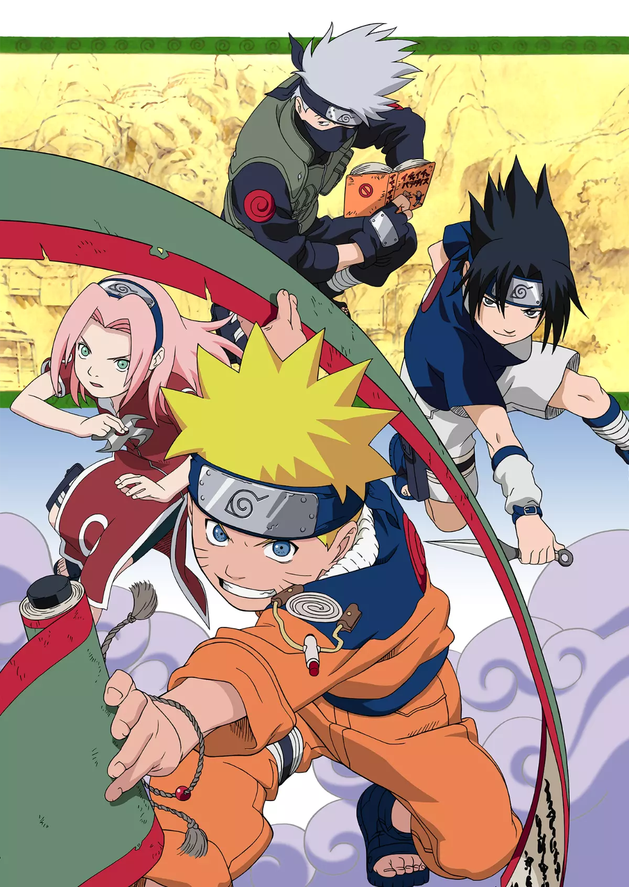

Anime List
-

One Piece
ONE PIECE is a legendary high-seas quest unlike any other. Luffy is a young adventurer who has longed for a life of freedom ever since he can remember. He sets off from his small village on a perilous journey to find the legendary fabled treasure, ONE PIECE, to become King of the Pirates!
-

Naruto
"Naruto is a ninja-in-training whose wild antics amuse his teammates. But he's completely serious about one thing: becoming the world's greatest ninja! As the battle against the Tailed Beast-targeting Akatsuki rages on, the heroic sibling battle between Sasuke and Itachi eventually concludes..
-
Jujutsu Kaisen
Jujutsu Kaisen is the story of Yuji Itadori, an easygoing high school student who joins the occult club at school. When they accidentally summon grotesque creatures by messing with a cursed object, Itadori fights to save his friends' lives.